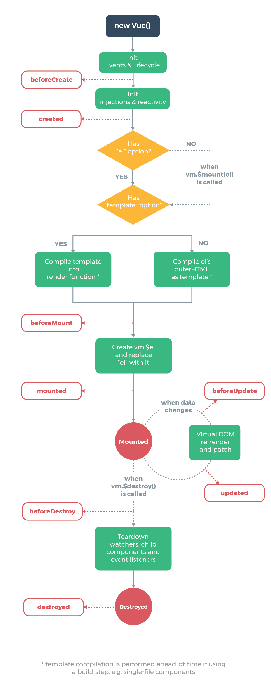
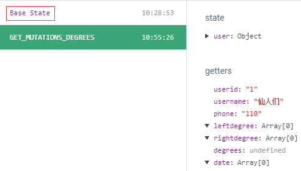
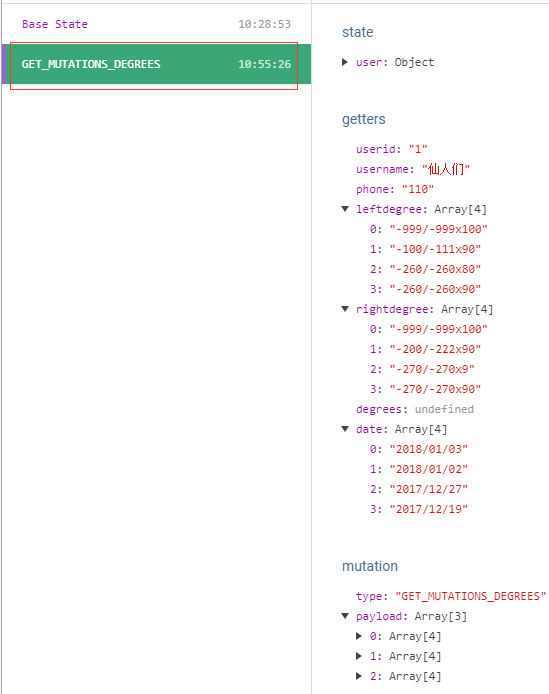

MMP,vue开发遇到的很多坑可以看这里：https://segmentfault.com/a/1190000010230843#articleHeader11 ！！！
简介
该项目是个人第一次独立从前台到后台开发,也是第一个自己使用vue开发的真正意义上的项目
目的
- 使用vue开发实战,加深对vue的学习与理解;
- 后台采用SpringMVC框架,熟悉后台环境部署;
- 熟练使用数据库的相关操作;
- 写一个能够保存个人每次验光度数的小工具,避免自己忘记度数,同时以后再次验光可以继续保存进来进行对比。
项目功能
目前想到的就是做成一个微信公众号或者小程序,基于微信大流量平台以及方便等特性便于用户查询、添加自己的验光度数。
以后如果想到好玩的或者有用的功能在往上添加。
项目开发中遇到的坑
由于一开始做的是前台,使用的是vue，公司并没有使用vue进行过开发,之前项目结束自己大概看了下,感觉挺简单的,以为自己入了门。当开始着手开发这个项目时距离当初学习vue已经几乎两个月过去了,打开vue-cli构建的项目时只有一脸懵逼,好在也不是完全忘记,毕竟踩过的坑记忆最深刻。
谈谈这次使用vue开发遇到的坑吧:
1.该项目是做成移动端的,所以采用了Element-ui的移动版mint-ui,这里便遇到了第一个问题,其实是我一开始学习vue的时候没在意。
什么问题呢?
其实就是这些外部UI框架需要在 main.js 里面引入并且通过
Vue.component(组件名, 组件)的形式注入,这样才能在.vue里使用。
还有,这些UI框架或多或少都会有那种弹出框的组件,这个组件需要在 Vue的原型对象上增加对应的属性,例如: Vue.prototype.$msgbox = MessageBox
2.第二个坑在首页的树形图上。一开始我试了很久都不知道怎样设置树的高度,使之随着数据的增多而自动增长。
解决办法是: 在 created钩子函数里通过 this.$nextTick() 方法设置
老实说,一开始我并不知道 this.$nextTick() 有什么用处,看了官方文档才大概了解。(主要看深入响应式原理这一块)
异步更新队列
由于vue是数据驱动的,并且是异步更新DOM。只要数据变化,Vue 将开启一个队列，并缓冲在同一事件循环中发生的所有数据改变。如果同一个 watcher 被多次触发，只会被推入到队列中一次。这种在缓冲时去除重复数据对于避免不必要的计算和 DOM 操作上非常重要。然后，在下一个的事件循环“tick”中，Vue 刷新队列并执行实际 (已去重的) 工作。
例如，当你设置vm.someData = 'new value'，该组件不会立即重新渲染。当刷新队列时，组件会在事件循环队列清空时的下一个“tick”更新。多数情况我们不需要关心这个过程，但是如果你想在 DOM 状态更新后做点什么，这就可能会有些棘手。虽然 Vue.js 通常鼓励开发人员沿着“数据驱动”的方式思考，避免直接接触 DOM，但是有时我们确实要这么做。为了在数据变化之后等待 Vue 完成更新 DOM ，可以在数据变化之后立即使用Vue.nextTick(callback)。这样回调函数在 DOM 更新完成后就会调用。
官方文档说的很清楚,当数据改变后,Vue更新DOM。而我想做的就是当用户新增验光度数时,视光树上会相应的展示刚刚新增的度数(这点能做到),与此同时,视光树应该相应的增长！
症结就在这里,如何做到当新增了一条数据,DOM刷新时连带着视光树相应的增长呢?
这里就需要在数据变化之后立即使用Vue.nextTick(callback),改变视光树的长度。
这里当时还遇到个小问题,其实是脑子犯抽了。。。不知道怎么设置视光树的高度。当时直接this.$refs.xian.height发现没用,突然不知所措,why?
23333333!
this.$refs.xian没有height属性,这是style里面的属性,这个破问题当时还困扰了我较长时间,现在想想,真尴尬。。。
3.第三个坑在dispatch()这里。
老实说,对这个我不陌生,毕竟刚进公司做的项目是用react开发的,vue和react很相似,react里面的dispatch可以调用model层的effects里面的方法(公司使用的是dva框架),其实vue这里也是,dispatch调用的是store层里面的actions,和react相比其实就是换个名字。关键问题是我不知道在哪里调后台接口了。。。
主要在网上看到的大多数vue的项目都只有前台,一开始有点懵逼。然后把社区里面的那个高仿饿了么项目克隆下来发现它直接在各个.vue文件里面调用的,但是看了它的写法,万变不离其宗,还是磕磕绊绊的写出来了。至于mutations其实就类似于dva里面的reducers,也可以在里面进行逻辑操作的。网上看了不少项目,基本上都有在mutations进行逻辑操作。但是看了公司项目里面的代码,reducers基本上只是对之前的数据进行了读取、赋值与返回操作。逻辑大多写在effects,不知道vue是不是也应该把主要逻辑写在actions里,目前还太菜,没法领悟它的精髓啊。
4.第四个坑比较弱智,一看就知道是vue写少了。我想在页面中直接打印输出data中的属性,我直接this.属性名,报错,说没有该属性,我就很讶异了,有啊,我定义了啊！边思考边排除发现是这里报错,这我就很奇怪了。我看到页面上v-for语句可以直接v-for="item,index in this.items"啊,怎么到了这里就不行了呢,然后看官方文档示例,果然是这个问题,应该这样写,不然就是语法错误。PS:这是Mustache语法。
5.第五个坑就在接口那里了。以前写react时由于同事已经搭好环境了,用的是fetch,我只管复制粘贴改改就能用了。没有深入了解这是什么？直到这次开发这个项目,才开始真正的去学习使用它。
我先是把之前项目的代码拷贝过来,发现不能启动。因为没有装fetch安装包。遂不加思索的装了fetch,报错,提示我安装isomorphic-fetch和es6-promise,按照要求来,OK！
接口调用是在
action层,先把定义好的接口引入,然后使用类似const res = updateUserInfo(params)方法即可。注意: 参数类型必须和后台接口需要的参数类型一致。
6.第六个坑在后台这里。后台采用的是java。
一开始就想后台用SpringMVC+MyBatis,把来公司接触到的技术全部自己用一遍。结果,出身未捷身先死。。。
由于之前自己写过一篇入门级springMVC环境搭建,安装那篇博客来最基础的jsp页面没有问题能跑。但是这次作了一下,没有用项目自带的Webcontent文件夹,自己新建了一个文件夹。呵呵,坑就来了。
坑当然是在配置文件里啦。由于用的新文件夹
degree,所以需要在该文件夹下新建META-INF和WEB-INF两个文件夹,同时,在WEB-INF下新建lib包,所有的jar包放在这里;其次,在WEB-INF下新建web.xml和applicationContext.xml。springmvc-servlet.xml放在classpath路径下。
7.接下来就是编写接口的坑了。
接口其实照着以前的项目写,一开始get和post两种接收请求方式的接口就有点让我郁闷,好在不难。主要坑在springMVC注解这里。
平常我们
get请求可能是localhost:8080/degree?userid=1这种样子的,但是我照着之前的项目写,作大死加了@PathVariable("userid") String userid,这下就坑的我比较惨了,一直想不通 why 会错?这是 why? 思考了很久,这真的是很久,才百度到,原来用了@PathVariable注解的话,前台接口应该这样传:localhost:8080/degree/1,看到没有,不需要写userid直接传值就OK啦!
8.由于大部分接口是get请求,所以不可避免的遇到了中文乱码的坑。2333333。PS:web.xml里配置了过滤POST请求中文乱码的情况
用了最low的方法,
request.getParameter("username").getBytes("ISO-8859-1"),"utf-8"。这是因为浏览器传输时是以ISO-8859-1编码格式进行编码的,由于我的tomcat设置了utf-8编码格式,所以request接收参数时需要转为utf-8。
9.这个坑在mybatis里。之前从来没有用过mybatis,即使项目里面有我也没自己用过,所以只能在网上自己找教程用最简单的方法去写,当然,某些地方还能理解,因为之前学习了JDBC最原始的操作方法,对基础有些了解。但还是遇到了一些麻烦。
比如当一个userid对应多个leftdegree和rightdegree时,不可能用selectOne,只能是selectList。但是提供了这么多的selectList,我该用哪个?
既然我想要一个List,那么我肯定需要传入一个List,由于java几乎没基础,所以当时在纠结直接在类里面
private List<String> leftdegree呢还是在处理业务方法里面使用List<Degree> degrees = session.selectList(statement,userid)呢。
实践证明,选择第二种方式是正确的。
10.还有一个坑是在各个对应数据表的类里面,类里面定义的字段必须与数据表里面的字段相同。
11.这个坑涉及到了vue的生命周期。
我刚进入页面时就要调用两个接口,需要向接口传递userid,userid我放在了store里面,同时在首页也放进了date()里面。
一开始我想用this.userid即data()里面的数据作为参数,但是看浏览器请求接口时发现并没有带参数(get请求)。回到代码上我发现,调用后台接口的操作是在mounted()里面,而一开始data()里面的userid也是通过this.$store.state.user.userid得到的。
但是this.$store.state.user.userid得数据是在created函数里面才赋值的。通过这一个坑以及对比VUE的生命周期图可以发现,created先于mounted(),但是,mounted()也先于Mounted(即数据改变,页面刷新)。
12.第12个坑在跨域代理这里。
老实说,其实来公司第一个项目就接触过,但是当时我完全小白,完全没在意,苍老师说改哪里我就改哪里,不要问我为什么,当时得我问了也白问。
当时react的项目也是用脚手架搭建的,并且苍老师用了dora-plugin-proxy,这个插件默认的端口号是8989,而我们本地tomcat默认端口号是8080,端口号不一致,调用后台接口就有跨域请求的问题,但是当时在我进公司前苍老师就配置好了,所以我只知道项目启动的端口号是8989而没有深究,其实当时连react都不会用呢。
这不,自己弄得项目是通过vue-cli自动搭建的,它的端口号被我改成了8088,其实就是为了尝试下当初没有理解的困惑所做的试验。果然,作了一下还是有好处的,这不把跨域代理给实践了一波吗?
看书或者看视频得到的技术始终没有在项目中实践来的快来的深。这叫知行合一。
不扯了,讲讲怎么弄的。很简单,vue-cli搭建的项目在build文件夹里面有几个文件,其中包含了3个webpack的文件,了解下,一般不用改。我们需要改代理首先得找到相应的位置。
在
webpack.dev.conf.js文件里可以找到proxy: config.dev.proxyTable这段配置,这里的proxy其实就是配置的代理。它的值是config.dev.proxyTable,很明显,这又是config的属性。我们需要找到config。
搜索一下或者在文件顶部可以看到const config = require('../config')。也就是说config是config文件夹,与build平级。config.dev又对应着什么呢?
我的config文件夹下有四个.js文件,我分别打开每一个去查找,最终在index.js文件中找到dev与它内部的proxyTable属性。不过它是空的,我们配置就写在里面。
那么怎么写呢?
index.js文件头部有个链接:http://vuejs-templates.github.io/webpack。浏览器打开去看里面的配置示例就OK了。
扯一句,一开始我照着刚进公司的那个项目的package.json安装dora以及dora-plugin-proxy等配置,结果完全不起作用,到git上看提示已经很久不维护了,建议转roadhog,我差点直接按照他的建议来,不过好在留了个心眼问了下苍老师,苍老师说那是react用的,它在react基础上封装的,vue不能用。。。建议我用webpack自带的跨域代理。。。其实一开始就这么建议了,不过我以为dora-plugin-proxy比较屌所以想着复制他以前的代码来着的,结果愣是没成功。我怀疑dora-plugin-proxy也是给react用的。毕竟阿里的技术栈主要是react,这些又都是阿里开源的。
13.第13个坑。我日
情景:向后台调接口,基本上都是需要返回值的,前台需要根据返回的req.success是true还是false来进行下一步操作。本来也没什么,照着以前的项目写,用到了ReturnValue这个类,但是前台不管怎么调都是406,把我给气的啊。网上找了半天,人家都说是Accept的原因,需要设置text/html, application/xhtml+xml, */*。好吧,我加了,还是没用。问同事,同事也没遇到过,就这样网上找了接近两小时,终于知道为什么了,少jar包！！！
最后,加了
jackson-annotations-2.6.5.jar,jackson-core-2.6.5.jar和jackson-databind-2.6.5.jar三个jar包。真的想打人！！！
14.第14个坑
以前,一直以为在SpringMVC环境中,@RequestBody接收的是一个Json对象,一直在调试代码都没有成功,后来发现，其实 @RequestBody接收的是一个Json对象的字符串，而不是一个Json对象。然而在ajax请求往往传的都是Json对象，后来发现用 JSON.stringify(data)的方式就能将对象变成字符串。
后台接口使用@RequestBody String item时,前台参数写在body里面,这是个很低级的错误。如:
15.vue生命周期的问题

情景: 一进入首页就会调后台接口去数据库里查询有没有数据,如果有得到数据就把它显示在首页上。接口无报错,且数据能打印出来,但是首页就是没有数据,无论怎么刷新都不行,进入其他页面在返回时发现有数据了。怀疑与生命周期有关。
一开始在首页的data()里面是这样定义username属性的:
然后在mounted()里面diapatchstore里面的actions,在actions里面调接口并得到返回值,然后在mutations里改变state里面对应属性的值。但是值改变了,页面上的数据却没变。问题就在这里。无论怎么刷新都不管用!
后来打开之前考下来的其他项目参考,发现它们在页面上的data()里面初始化的属性基本上都是没有值的。然后我便仿着来,同时在mounted()方法里加上了
结果仍然没有。
然后放弃了在actions里面调后台接口的想法,照着之前那位高仿饿了么的大神的写法在页面上直接调后台接口:
搞定了。
至于原理我就有点不大了解了,只能去社区问了。
去社区问了,回来补充:
1.首先原来的方法是在
mutations里改了state的值，没有改store里的值，但是在mounted里取的确是store里的值，两个是不同步的
2.data()是在mounted之前执行的
3.state要和store同步需要用vuex的mapState方法，映射store到state
例如:
注意！！！
我在刚进页面时还需要获取用户的度数(如果数据库里有对应的数据的话),这时候我就想作一下,还是换成dispatch到actions层去调接口,然后resolve到页面上接收数据。根据网上前辈们的说法,我需要在计算属性里面使用...mapState来同步store和state里面的数据,但是不知道是不是我的写法问题还是方法不对,依然没起作用。刚进页面上依然没有数据,刷新也没有,只有点击其他地方再返回时页面上才有数据。
补充！！！
这次是真的解决了！
我安装了vue-devtools来观察,发现刚进页面以及刷新时,BaseState里面没数据,接下来的GET_MUTATIONS_DEGREES倒是有数据,也就是说一直以来的猜想是对的,vue在初始化渲染的时候确实接收到没有数据。
这个时候又陷入绝望了,但是,生活还要继续啊,不能半途而废啊。
然后,又作了一把,没想成这次作对了。。。
我把页面上
data返回的属性同时写在了state里面,没成想,窝草,刷新有有有有有有有数！据！了！我日*。
哦,期间还遇到个js基础的坑,就是splice方法必需要两个参数,一个是删除的起始位置,还有一个是删除的个数或者长度吧。基础不牢靠啊！


最终data里面的代码写成了这样:
我个人猜想,既然想让data里面的属性响应式变化,那可能需要在state里面定义一个一模一样的进行绑定,个人愚见。
16.this.$store.dispatch()
今天想不在页面上直接调接口,想通过this.$store.dispatch()方法到actions层去调接口,突然发现打印出来是Promise类型,以前都没在意过,写法需要符合Promise语法: